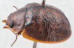
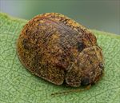
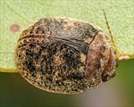
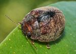
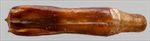
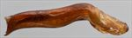
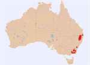

Click on images to enlarge
{kind=link}

Male, Sawpit Ck, Jindabyne, S.E. New South Wales
{kind=link}

Female, Eukey, S.E. Queensland
{kind=link}

Male, Armidale, N.E. New South Wales
{kind=link}

Female, Emmaville, NE New South Wales
{kind=link}

Aedeagus, dorsal view (Omeo, Victoria)
{kind=link}

Aedeagus, lateral view (Omeo, Victoria)
{kind=link}

Distribution
Name
Trachymela versuta (Blackburn)
Reference specimen
2002-207b, Omeo, Eastern Victoria.
Adult Description
Length: ♂ (6.4)6.7–8.1 mm (n=21), ♀ 6.7–8.8 mm (n=67).
Colouration:
- Head: variable, most commonly uniformly mid-brown to dark-brown with black-tipped mandibles, less often, a darker brown (rarely black) patch is present on each side between eye and median suture, rarely these patches coalesce across median suture; antennomeres 1–2 light-brown, 3–11 variable, often not or only a little darker, almost always with at least distal 3 or 4 antennomeres slightly or somewhat darker (usually only at distal extreme), less often considerably darker, rarely almost black towards outer antennomeres.
- Pronotum: brown, concolorous with head, rarely with some darker-brown markings on either side of centre.
- Scutellum: brown, concolorous with pronotum, usually broadly edged in a slightly or much darker shade of brown or even black, sometimes this darker shade extends over whole surface.
- Elytra: variable, frequently uniformly brown, concolorous with pronotum, often the verrucae and elevated, elongated interstices and/or humeral callus dark-brown or black, a broad black band along elytral suture from scutellum to summit is often present, an elongated ridge extending from anterior edge towards antero-median depression is frequently dark-brown or black, less often, the darker colouring extends over much greater areas of the elytra, punctures are outlined in a fractionally darker shade than interstices.
- Venter & Legs: variable, head may be completely brown, completely black or only with black gula, thoracic ventrites concolorous with or slightly lighter-coloured than head, legs concolorous, abdominal ventrites usually lighter-coloured than thoracic, ventrites often grade to a lighter shade laterally, epipleura black, partially black or completely brown.
- Cuticular Wax: uniformly light-brown and relatively evenly to somewhat unevenly and sparsely distributed over dorsal surface.
Morphology:
- Head: punctures moderately large (pd ≈ 2 × ef) and quite evenly and densely distributed. Antennae long (AL: ♂ 51–57% BL, ♀ 40–43% BL), filiform.
- Pronotum: almost evenly curved transversely over discal area, with a broad but very shallow depression situated behind the outside edge of each eye, marginal areas continue curvature of discal area or are noticeably explanate, puncturation usually clearly impressed, similar in size or slightly coarser than on head, quite evenly distributed and moderately dense in discal area, interstices sometimes elevated to the extent that they obscure punctures to some degree, punctures becoming much coarser towards lateral margins. Much finer punctures are scattered among the larger ones. Front margins join lateral margins in a smoothly rounded right-angle, with lateral margin briefly straight before curving smoothly (sometimes a little unevenly) and gradually towards rear margin.
- Scutellum: surface smooth to quite rough, unpunctured.
- Elytra: rounded, relatively flat (H: ♂ 39–45% BL, ♀ 43–50% BL), greatest height viewed laterally is clearly in front of middle of elytral margin (PGH: ♂ 50–52% BL, ♀ 49–52% BL); surface evenly curved over disc, interrupted by a shallow transverse depression just anterior to middle, margins very slightly to moderately explanate, punctures variable, from distinct and relatively evenly distributed to largely obscured by rugose interstices, with much smaller punctures scattered very sparingly on the interstices; small, round verrucae, some with a small central puncture, are present mostly in posterior half of disc, usually these are scattered almost randomly, but sometimes more prominent along VR3 and VR5; interstices usually very rugulose, with many small wrinkles and weals, of which a large proportion are oriented transversely, surface discontinuous (rarely almost continuous) under humeral callus. Vertical extension of epipleura large (HCE/PW = 0.39–0.43).
- Venter: prosternal process almost parallel-sided, open or lightly closed anteriorly, a scatter of short setae present on prosternal process, absent from mesoventrite, a single seta (uncommonly 2, rarely more) on anterior and median trochanter; front edge of metaventrite beveled, truncate; inner (horizontal) part of epipleura broad, forming a distinct ledge almost to apex, lacking setae.
Male Genitalia (Aedeagus):
- Dimensions: very large (LPE = 36–43% BL).
- Dorsal view: shaft with sides slightly sinuous in central section, being broadest at base and about 75% of distance to apex, slightly thinner between these points, converging from broadest point towards apex in a smooth arc, dorsal surface smoothly curved with well-defined (more so on either end) dorso-median channel present, dorso-lateral channels well defined, tip protruding as a smoothly rounded triangle, ostium round.
- Lateral view: shaft almost straight (rarely slightly sinuous) for all of central section except near apex, then curving suddenly downwards, thinning rapidly over the downturned section, tip deflexed.
Immature Stages
- Eggs: This species is ovoviviparous.
- Larvae: Unknown.
Similar species
- Ta56: this species is of a similar shape and size and occurs in similar high-altitude locations as Ta45. It is distinguishable by the lack of (or very few) transverse wrinkles on the elytra as well as by its more robust verrucae and the presence of a quadrate, smooth area straddling the elytral summit. It lacks the broad horizontal ledge on the inner epipleura that extends almost to the apex in Ta45.
- Ta129: very similar in size and the texture of the dorsal surface to Ta45 and occurs very close to it in the far northern part of the distribution. See Ta129 for a discussion of differences.
Notes
- Taxonomy: Identification of this species as Trachymela versuta (Blackburn) is by comparison with the type specimen (including its very distinctive aedeagus) in the Natural History Museum, London (BMNH). Ta45 seems most closely related to Ta89, sharing with it the unusual form of the aedeagus and the broad horizontal epipleural “ledges”.
- Distribution & Abundance: This species occurs in the higher elevation areas from extreme south-east Queensland into the Victorian alpine region.
- Host Associations: Individuals of this species have been collected mostly (> 80%) from eucalypts of the stringybark group (Eucalyptus: Capillulus), with just a few specimens from other monocalypt species, including Eucalyptus pauciflora, E. andrewsii, and E. stellulata. The specimens from north of Sydney are collected almost exclusively from stringybark (58 of 61 specimens), while those from southern Australia seem to have a much more diverse host range (5 of 16 specimens off stringybark).
- Morphological Variation: Very variable in colour (light to dark brown) and markings. The inner surfaces of the epipleura vary from completely black to completely brown, with both extremes present in southern and northern populations. The elytral sculpture is also very variable, ranging from very rugulose, with the wrinkles and verrucae hiding the puncturation almost completely to specimens where the puncturation is quite prominent over almost all the elytral surface. One of the diagnostic features of this species is the presence of many fine transverse wrinkles on the elytral surface. Most of the specimens from southern locations are effectively identical in appearance to those from northern ones though they tend to be somewhat darker in colour. A male specimen from Bemboka in southern New South Wales has a more robust aedeagus, with a more pronounced flare near the apex (though the overall shape is very similar). Another male from Adaminaby has an aedeagus that is prominently sinuous from the base in lateral view, but is otherwise very similar. These differences, along with the diversity in hosts in the south, may indicate the presence of more than one species.
- Population Structure: The sex ratio is very strongly female-biased, with 78% of 102 specimens examined being female (p < 0.001 using an exact binomial test).
Copyright © 2026. All rights reserved.